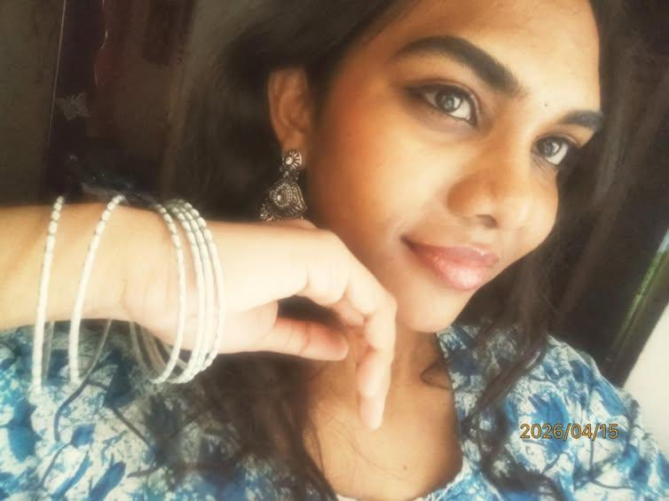
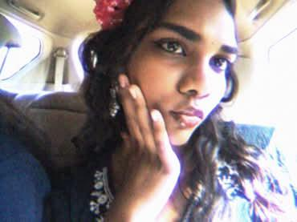
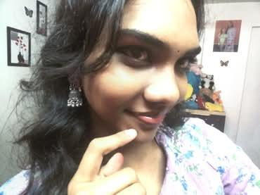
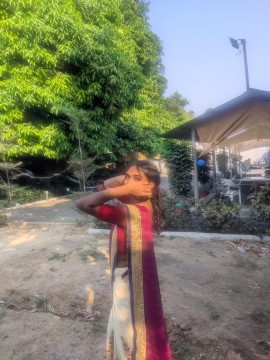

Baby i know i cant gift you right now anything but this is all i can do right now.so here are somethings i always wanted to say to my little girl.


I love how you get excited around children likeee it bring my inner child out around youu but which nobody really notices but i hide it or supress it sometimess. and also seeing you happy with kids makes me happy too and tha makes me feel like i should have been with you at that time but i cant do that and then i jst sit with a guilty face. i appreciate this behaviour a lot likee its's just so beatiful treating children like that is such a golden heart so positivelyy this may be normal to others but i jst love it yaawr

I love how you clap your hands when you get excited like a littlee child. whenever you do that i just wanna pinch both of your chicks andd sayy "awwwwwwww melaa babuuu kitnaa pyaaraaa heiii i lovee youuu so muchh melaa bachhaaa" and you do this whilee eating like when you enjoy your meal so after saying that i would jst make you seat on my lap and feed you with my handss sooo watch out next time you do that in canteen i mightt not be able to control myself

Treating everyone with kindness this was like the first thing i noticed but then i thought kii starting starting mei to sab new places mei eisee hi hotee and i forgot about it but idk if you remember or not when you yelled or screamed at harshal in class idk what was it or what happened but i judged you so hard just by that and thought see reality coming out but then harsh told me ki aap mujhe like krte ho phir uske baad hackathin hua to hackathon meii i do was observing but not as much as i was observing you like i was reading your every step trying to understand your thought process and my mind did change a lot about you that day in a very positive way like how you comforted me i know i was little annoying with that but i think i was doing that bc i wanted you to comfort me even moree.so yaa i love how you can stay kind to everyone even when you dont wanna be bc thats something that makes you you blessy and i love it
I loveeee youuuu sooooooo muchh myy little princesss
lastlyy i wanna say something more
Blessyy i saw all of your repost and keep checking it like almost everyday so i am gonna say about it.
you think you ruin things well if you ruin things then i love fixing things thats like my hobby and if you think you will ruin mee gurlll my parents try that everyday but still shining as always soo it's alright to break things sometimes because do you know kintsugi its a japanese art in which you break the bowl and repair it with gold and thats how those bowls gain their beauty just like that ruining things is completly normal melaaa bachaaa i will fix it and make far more precious and valuable than ever.
You wanna run away jab bhi life kharab chal rhi ho blessyy honestly babyyyy i did this too when i was in hostel meii apne mummy papa se juth bolta kii haaan mere boht saare dost heii khana kha liya vagera vageraa apne aap ko isolate krta but babyyyy ye krne se problem chali to jaati heii lekin uska asar itna gaheraa hota hei ki kabhi bhula hi nai paate to jab bhi eisaa aapko lagee bejijak mere paas aana mei kaha hu kya kr rha koi farak nai pdtaa i am always avialable hunnn okieeee babyyyyy.
I lovee youuuu the mostt i loveee youu so muchhhh babyyyyy i loveeee youuuuu anddd you are the most beautiful person everr you are perfectt in every singlee wayyy myy loveee i loveee youuuu soooooooo muchhhhhhh muahhhhhhh.
I want to learn how to love you make you the happiest you have ever been and heal you because i want to stay with you forever.so please correct my every mistake i will understand it and make it even better.